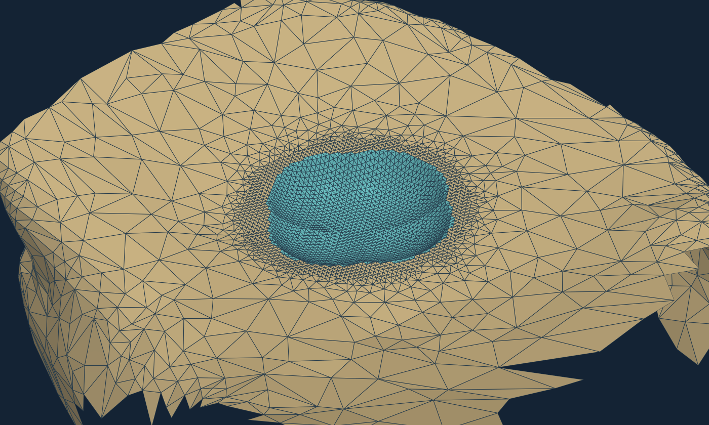
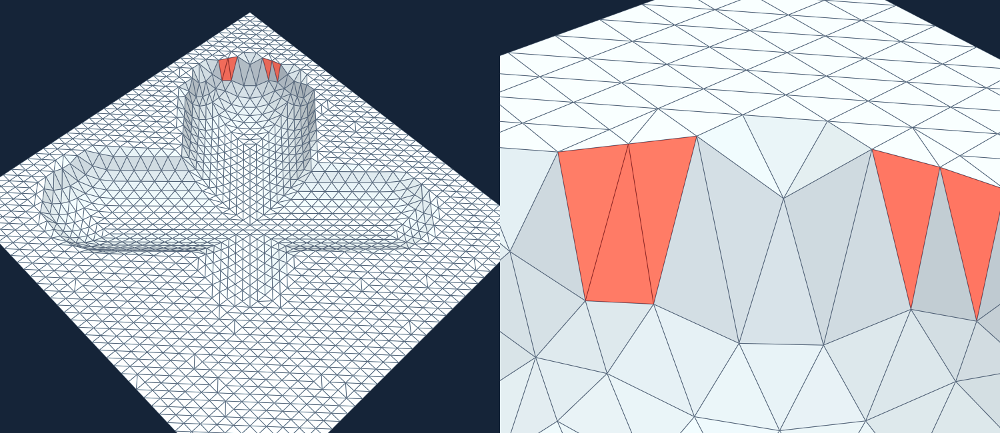

01 研究内容一、二边界调整第 3–4 页：更新后的三项研究分工与流程
02 本周几何实验第 5–12 页：统一测试案例、真实画面、质量数据与强基线
03 状态和持续输入第 13–16 页：真实 CT 局部状态、误差范围与显示年龄
04 结论与后续工作第 17 页：已验证进展、受限范围和后续任务
数据说明：公开真实 CT 骨面与仿真磨钻轨迹同时使用；画面展示的是程序运行保存的骨面结果。
围绕实际磨钻运动，回答骨面怎样更新、状态怎样算、结果能否及时显示
本次汇报按“归属与方法—实验证据—状态与时序—下一步”展开。
相较 9-15 第一版，明确区分了两项研究中原本都涉及的“局部增量计算”。
| 研究内容 | 9-15 第一版表述 | 当前明确边界 |
|---|---|---|
| 一：几何约束下的骨面增量重建 | 强调局部重建与质量保持 | 定义目标几何、活动边界、三角化与质量规则；输出骨面、误差和质量 |
| 二：面向连续磨削的异构计算与一致性状态发布 | 原名“时空协同的骨面实时可视化”，包含局部增量计算的宽泛表述 | 冻结研究一的算法与验收门槛，研究 CPU/CUDA 执行、积压处理和同版本发布 |
| 三：不确定性感知的磨削状态表达 | 计划状态与风险表达 | 定义剩余量、过磨及误差影响；状态字段送回研究二显示 |
输入相同，研究问题不同；几何算法稳定后，才有可比较的执行速度。
| 本周工作：一句话解释 | 归属 | 本次汇报的证据 |
|---|---|---|
| 六类运动、来源交界、v3 网格质量、回折拒绝、Geogram 对照在不同磨钻轨迹下检查切削后骨面的几何误差和三角网格质量，并识别不支持的边界形状。 | 研究一 | 冻结评测 3/4 通过，另 1 例拒绝 |
| 验收后同版本发布、持续输入与状态年龄每段运动都计算，验收通过后才同步更新骨面、刀位和状态，并测量输入发生到结果显示的时间。 | 研究二 | 16 条输入 0 丢弃；10 条/秒时平均晚 5.89 秒 |
| 真实 CT 局部剩余量、完成度及误差范围比较当前骨面与计划骨面，计算剩余磨削量及误差对状态判定的影响。 | 研究三 | 局部完成度 4.75%；仅算法误差时范围 4.13%–6.85% |
以下是 9-15 汇报后的新证据，输入和限制在后续页面分别展开。
| 研究 | 实验输入 | 主要数据 | 结论范围 |
|---|---|---|---|
| 一 · 来源约束 v3 | 4 条冻结解析评测路线 | 旧规则 1/4 → v3 3/4；末例 5 个坏面并拒绝 | 连续高度交界有效；回折待解 |
| 一 · Geogram 对照 | 4 条同输入解析路线 | Geogram 抽样距离 0.002943–0.003354 mm；未维护上表面 556–874 坏面 | 形状精度与网格质量分开判断 |
| 三 · 真实 CT 局部状态 | 6 mm 圆盘、16 段仿真运动 | 计划量 504.506 mm³；已完成 23.943 mm³；剩余 480.563 mm³ | 局部推算，不是实测磨量 |
| 二 · 连续输入重放 | 16 条运动，10/2/1 条每秒 | 0 丢弃；平均显示年龄 5.89/2.89/0.91 秒 | 版本一致，但尚不实时 |
| 一 · PaMO 作者对照 | 远端包已冻结 | 尚无运行结果 | 不能计入算法优劣比较 |
9-15 已有受限的 16 步真实骨面演示；这周开始用六类运动输入检验方法适用范围。
单一路径不能覆盖重复、越界、竖直、倾斜和中断等输入条件，因此分别设置六类运动案例。
| 运动或情形 | 主要检验什么 | 当前证据 |
|---|---|---|
| 浅磨、重复路径 | 重复经过同一位置不能重复计去除量 | 有解析参考结果 |
| 计划边缘运动 | 实际越界部分必须保留在评价中，不能按计划边界自动截除 | 有解析参考结果 |
| 竖直钻孔 | 球底与侧壁能否正确连接 | 有解析参考结果 |
| 倾斜交叉、变深运动 | 多次扫过后的曲面交界与网格质量 | 有限仿真验证 |
| 中断、晚到输入 | 运动事件和显示版本是否对得上 | 固定回放规则 |
球形磨钻扫过后，留下的表面常在“原骨面”和“切削曲面”之间切换。
关键变化：新点根据三维曲面形状定位，而非只在俯视平面取中点。
“网格质量”看三角形是否过尖、过扁。当前验收要求最小角至少 25°，同时满足形状、拓扑与几何误差检查。
从本周在线运行保存的 17 张双精度网格快照中，按同一视角重现末状态。

9-18 在线逐步验收输出：公开 CT 肩胛骨，固定 16 段仿真交叉运动，最终状态从保存的网格顶点和面直接渲染。
青色表示相对初态发生变化的三角形，骨色表示周围未变化区域；共有 1,328 个顶点位置改变。
同一次在线运行也计算局部剩余量，并在网格验收后发布状态。这是 9-15 之后的运行结果，轨迹仍不是机器人实采。
方法冻结后，原样重跑此前没有用于调参的四条原始质量失败路线。
| 评测路线 | 旧规则坏面 | v3 坏面 | v3 最小角 | 结论 |
|---|---|---|---|---|
| 平面坡度 0.11 | 0 | 0 | 26.33° | 通过 |
| 平面坡度 0.15 | 4 | 0 | 25.79° | 通过 |
| 平面坡度 0.19 | 3 | 0 | 26.63° | 通过 |
| 平面坡度 0.23 | 5 | 5 | 22.77° | 拒绝 |
它的表面出现“回折”：从正上方看，同一位置可能涉及不止一层边界。

这是解析仿真坏例，按冻结输入和 v3 算法重新运行并渲染。红色标出 5 个过尖或过扁的三角形。
交界处还检出 10 处不连续切换，最大高度跳变 0.043 mm。
因此程序拒绝这个案例，不能把它算作第 4 个成功结果。
在同一批四个解析案例中，接入 Geogram 作者的精确网格布尔方法。
我们让作者程序按同样的骨面和钻头路径切四次。切削边界与解析参考结果接近，最大抽样偏差约 0.003 mm。
但直接输出的三角形有 556–874 个达不到本项目质量门槛；几何偏差较小，仍须检查三角网格质量。
它是作者提供的网格质量维护方法。我们已固定代码版本、参数和同一输入，做成可复现远端包。
远端连接配置缺失，还没有跑出结果；尚不能评价它对网格质量的改善。
把公开 CT 肩胛骨、既有合格骨面和 16 段仿真轨迹放在同一计划坐标下。
在该局部计划中，目前完成约 5%，剩余约 95%（480.56 mm³）。
完成度不只给一个数字，还给误差允许下可能落入的范围。
“误差上界”表示保守地考虑最坏偏差，不等于某个概率的置信区间。CT 分割、配准、跟踪等额外误差目前只有仿真假设，尚无设备实测。
一段运动算完后，先验收网格，再同时更新显示内容。
这项工作的目的：避免屏幕同时显示新钻头位置与上一版骨面，从而给出错误的剩余量。
骨面、钻头位置、剩余量同时更新成第 k 版。
三者一起停在上一合格版，并告诉用户画面已经旧了。
模拟钻头每 0.1、0.5、1 秒送来一条新动作，检查处理速度是否满足输入速度；16 条动作均计算、0 丢弃。
“平均晚 5.89 秒”表示：10 条/秒时，一条动作发生后，相关骨面平均要等近 6 秒才首次显示。
只让屏幕跳过中间画面，并没有省去每条动作的骨面计算；输入来得比计算快，待处理运动事件就会不断增加。此页用一次本机耗时做合成重放，不是真实机器人时序，当前 CPU 管线尚未达到 100 ms 反馈目标。
本周确定了当前方法的适用范围和必须拒绝的输入条件。